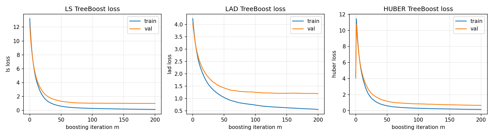
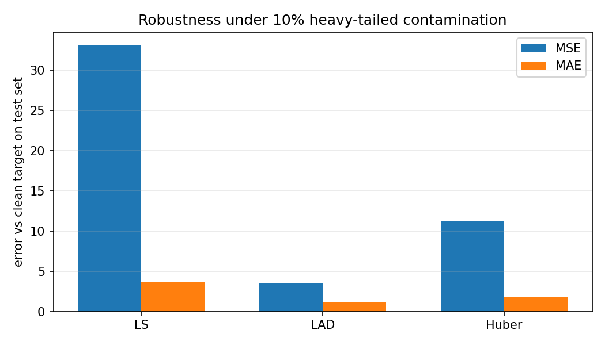
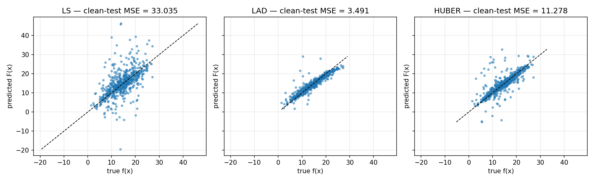
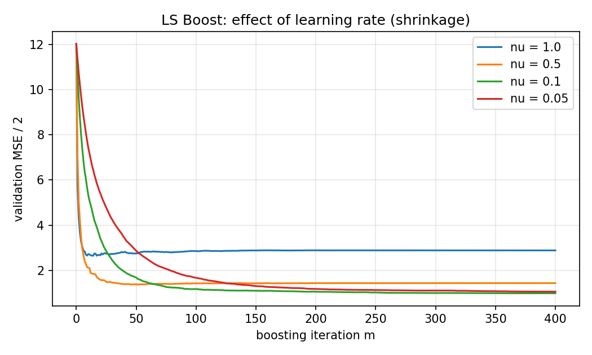

Greedy Function Approximation:
A Gradient Boosting Machine
Jerome H. Friedman — Annals of Statistics, 2001
Reading + from-scratch implementation
LS Boost · LAD TreeBoost · M (Huber) TreeBoost
Roadmap
- Why we need this paper — the problem and the literature
- The key insight: gradient descent in function space
- Three regression algorithms: LS, LAD, Huber TreeBoost
- The terminal-region update — the practical heart of TreeBoost
- From-scratch implementation in Python
- Experiments: convergence, robustness, shrinkage
- What the results reveal & the paper's lasting impact
The function-estimation problem
Given training data \(\{(\mathbf{x}_i, y_i)\}_{i=1}^N\), find a function
\(F : \mathcal{X} \to \mathbb{R}\) minimizing the expected loss
\[F^* = \arg\min_F\, \mathbb{E}_{y,\mathbf{x}}\, L\!\left(y,\, F(\mathbf{x})\right).\]
- Regression: \(L(y,F) = (y-F)^2\) or \(|y-F|\).
- Classification: \(L = \log(1 + e^{-2yF})\) for \(y \in \{-1, 1\}\).
Most existing methods restrict \(F\) to a parametric family and tackle a
hard joint optimization. This paper takes a non-parametric,
stagewise route.
Where this paper sits
Before (1995–2000)
- AdaBoost (Freund & Schapire, 1996) — re-weights
examples; tied to exponential loss.
- LogitBoost (Friedman, Hastie, Tibshirani, 2000) —
binomial likelihood via Newton steps.
- Basis-function methods: MARS, RBF, SVM, neural nets.
This paper
- One unifying view: boosting is gradient descent in function space.
- Plug in any differentiable loss.
- Concrete algorithms for LS, LAD, Huber, and K-class logistic.
- Adds tools to interpret tree boosters.
After: XGBoost (2014), LightGBM (2017), CatBoost (2017) — all extend this paradigm.
Stagewise additive expansions
Approximate \(F\) by a sum of simple "weak learners":
\[F(\mathbf{x};\, \{\beta_m, \mathbf{a}_m\}) = \sum_{m=1}^{M} \beta_m\, h(\mathbf{x};\, \mathbf{a}_m).\]
- \(h(\mathbf{x}; \mathbf{a})\) — a small parametric function (e.g. a regression tree).
- Joint optimization over all \((\beta_m, \mathbf{a}_m)\) is generally hard.
Greedy stagewise alternative — at each step \(m\):
\[(\beta_m, \mathbf{a}_m) = \arg\min_{\beta, \mathbf{a}} \sum_{i=1}^{N}
L\!\left(y_i,\, F_{m-1}(\mathbf{x}_i) + \beta\, h(\mathbf{x}_i;\mathbf{a})\right).\]
Eq. (9) of the paper. Previous terms are frozen — no re-fitting.
The key insight
Boosting = numerical optimization in function space
Treat \(F(\mathbf{x}_i)\) at each training point as a free parameter.
The negative gradient at iteration \(m\) is
\[\tilde{y}_i = -\!\left[\frac{\partial L(y_i, F(\mathbf{x}_i))}
{\partial F(\mathbf{x}_i)}\right]_{F(\mathbf{x})\,=\,F_{m-1}(\mathbf{x})}.\]
These are pseudo-responses: the direction in which moving
\(F(\mathbf{x}_i)\) most reduces the loss.
Why this matters: the gradient is only defined at the
training points. Fit a weak learner \(h(\mathbf{x}; \mathbf{a}_m)\) to
the pseudo-responses by least squares — that's the smooth, generalizable
approximation to the unconstrained gradient.
Algorithm 1 — Gradient Boost (generic)
1. F0(x) = arg minρ Σi L(yi, ρ)
2. for m = 1, …, M:
3. ỹi = −[ ∂L(yi, F(xi)) / ∂F(xi) ]F = Fm−1 # pseudo-responses
4. am = arg mina, β Σi [ ỹi − β h(xi; a) ]² # least-squares fit
5. ρm = arg minρ Σi L(yi, Fm−1(xi) + ρ h(xi; am))
6. Fm(x) = Fm−1(x) + ρm h(x; am)
- Line 3 is loss-specific. Everything else is the same machinery.
- Line 4 is least squares — fast and well-understood, regardless of the original loss.
- Line 5 is a 1-D line search in the original loss.
Algorithm 2 — LS Boost
With \(L(y,F) = \tfrac{1}{2}(y-F)^2\):
- Pseudo-response: \(\tilde y_i = y_i - F_{m-1}(\mathbf{x}_i)\) — residuals.
- Line 4 fits the current residuals; line search becomes trivial.
- Initial constant: \(F_0 = \bar y\).
Reduces to the classical "fit residuals iteratively" recipe — the
reality check for the framework.
# src/treeboost/losses.py
class LeastSquaresLoss(Loss):
def initial_prediction(self, y): return float(np.mean(y))
def negative_gradient(self, y, F): return y - F # residuals
def leaf_update(self, y, F, idx): return float(np.mean((y - F)[idx]))
Algorithm 3 — LAD TreeBoost
With \(L(y,F) = |y-F|\):
- Pseudo-response: \(\tilde y_i = \operatorname{sign}(y_i - F_{m-1}(\mathbf{x}_i))\).
- Trees are fit by least squares to signs of residuals.
- Initial constant: \(F_0 = \mathrm{median}(y)\).
Crucial step: the per-leaf update is the
median of residuals in the leaf, not the leaf mean.
The tree's leaf values are overwritten with these medians.
\[\gamma_{jm} = \mathrm{median}_{\mathbf{x}_i \in R_{jm}}\!\left(y_i - F_{m-1}(\mathbf{x}_i)\right)\]
This is equation (18) specialized to \(L_1\). It is what makes the method robust.
Algorithm 4 — M TreeBoost (Huber)
Quadratic for small residuals, linear in the tail:
\[L(y,F) = \begin{cases}
\tfrac{1}{2}(y-F)^2, & |y-F| \le \delta \\
\delta\,|y-F| - \delta^2/2, & |y-F| > \delta
\end{cases}\]
- Adaptive \(\delta_m = \mathrm{quantile}_\alpha\!\left(|r_i|\right)\) at each iteration.
- Pseudo-response: residual when \(|r|\le\delta\), else \(\delta\,\operatorname{sign}(r)\).
- Leaf update is Friedman's 1-step Newton-like adjustment around the leaf median:
\[\gamma_{jm} = \tilde r_{jm} + \frac{1}{N_{jm}}\!\!\sum_{\mathbf{x}_i \in R_{jm}}\!\!
\operatorname{sign}(r_i - \tilde r_{jm})\,
\min\!\left(\delta_m,\; |r_i - \tilde r_{jm}|\right).\]
\( \tilde r_{jm} = \mathrm{median}_{\mathbf{x}_i \in R_{jm}}(r_{m-1}(\mathbf{x}_i)) \).
The terminal-region update — the secret sauce
Two stages per iteration when the weak learner is a tree:
- Build a \(J\)-leaf tree by least squares on the pseudo-responses
\(\tilde y\).
- Re-solve a tiny 1-D problem inside each leaf using the original loss:
\[\gamma_{jm} = \arg\min_\gamma \sum_{\mathbf{x}_i \in R_{jm}}
L\!\left(y_i,\; F_{m-1}(\mathbf{x}_i) + \gamma\right).\]
- Update: \(F_m(\mathbf{x}) = F_{m-1}(\mathbf{x}) + \nu \cdot \gamma_{jm}\)
for \(\mathbf{x}\) in leaf \(R_{jm}\).
Why this is the crux: the LS-fit tree is a fast, smooth
gradient direction; the loss-specific \(\gamma_{jm}\) re-injects the
original loss's geometry — robust medians for LAD, clipped sums for
Huber, Newton steps for logistic.
From-scratch implementation
One clean abstraction does all the work:
class Loss(ABC):
def initial_prediction(self, y): ... # F_0
def negative_gradient(self, y, F): ... # ỹ_i (line 3)
def leaf_update(self, y, F, indices): ... # γ_jm (eq. 18)
def update_state(self, y, F): ... # e.g. Huber's δ_m
Three losses implement this contract; the boosting loop is loss-agnostic.
tree.py
CART-style regression tree, best-first, vectorized split search, set_leaf_values() for γ.
losses.py
LS / LAD / Huber, each ~30 LOC. HuberLoss.update_state sets δm.
model.py
TreeBoostRegressor drives Algorithms 2/3/4 with shrinkage ν.
No scikit-learn, XGBoost, LightGBM, or CatBoost. Only numpy for arrays. 30 passing pytest tests.
Custom regression tree (the weak learner)
- Best-first growth — repeatedly expand the leaf with the highest SSE-reduction split until
max_leaves = J is reached.
- Vectorized split search — sort each feature column, pre-compute cumulative sums of \(\tilde y\), evaluate all valid split points in one shot:
\[\text{gain}(s) = \frac{S_L^2}{n_L} + \frac{S_R^2}{n_R} - \frac{S^2}{n}.\]
- Honors \(J\) directly — same complexity knob the paper uses (Section 5).
- Leaf-id API (
apply, set_leaf_values) — boosting driver maps each row to its leaf, computes \(\gamma_{jm}\) per leaf, and overwrites the LS leaf means.
Roughly 200 lines, deterministic, and readable. Built for correctness over throughput.
Experiment 1 — convergence on a clean signal
Friedman-#1 target
\(f(\mathbf{x}) = 10\sin(\pi x_0 x_1) + 20(x_2-0.5)^2 + 10x_3 + 5x_4\)
\(n_\text{train} = n_\text{test} = 600\), \(\sigma=1.0\) Gaussian noise.
\(M=200\), \(\nu=0.1\), \(J=8\) for all three losses.
| Loss | test MSE | test MAE |
|---|
| LS | 1.989 | 1.136 |
| LAD | 2.309 | 1.194 |
| Huber | 1.977 | 1.124 |
Under Gaussian noise: LS ≈ Huber; LAD pays the
classical small efficiency cost.

Train (blue) and validation (orange) loss curves per iteration.
Experiment 2 — robustness under contamination
Same target, but 10% of training labels perturbed by heavy-tailed shocks (\(\pm 25 \cdot t_3\)). Test set is clean.
| Loss | clean MSE | clean MAE |
|---|
| LS | 33.04 | 3.63 |
| LAD | 3.49 | 1.17 |
| Huber | 11.28 | 1.84 |
- LS collapses — squared loss is dominated by outliers.
- LAD recovers almost completely (medians ignore extremes).
- Huber is much better than LS, ranking depends on \(\delta\).

Clean-test error per loss under 10% contamination.
Predicted vs true under contamination

LS predictions drift well off the diagonal; LAD and Huber stay calibrated despite the noisy training labels. This is the picture Section 4 of the paper promises.
Experiment 3 — shrinkage trade-off
LS Boost on the clean signal, sweeping the learning rate \(\nu\).
- \(\nu=1.0\): hits the floor in ~30 iterations, then plateaus.
- \(\nu=0.1\): lower final validation MSE — but takes ~150–200 trees.
- \(\nu=0.05\): slowest; needs more iterations to compete.
Reproduces the standard recommendation that emerged from this paper:
moderate shrinkage + larger \(M\) generalizes better.

Validation MSE/2 vs boosting iteration for several \(\nu\) values.
What worked & what didn't
Worked
- The 3-method
Loss interface kept the boosting loop tiny and loss-agnostic.
- Best-first tree growth honored \(J\) cleanly with no extra plumbing.
- Unit tests written against the paper's equations (e.g. Algorithm 4 leaf update) caught the real bugs early.
- Experiments reproduced the qualitative paper claims: LS=reality check, LAD/Huber robust, shrinkage helps.
Honest limits
- CART splitter is correct but slow — fine for a few hundred trees, not industrial.
- No subsampling, no influence trimming (regression scope by design).
- Huber's exact ranking depends strongly on the quantile chosen for \(\delta\).
- LAD training loss is non-monotone per-iteration because
sign(r) discards magnitude.
What the results reveal
- Function-space framing isn't just exposition. Once
Loss exposes three methods, adding a new regression loss takes minutes.
- The terminal-region update is the practical heart. Without it, LAD would degenerate; with it, leaves carry medians and the method is genuinely robust.
- Robustness has a small efficiency cost. LAD ≈16% worse than LS on clean data; LS ≈10× worse than LAD under contamination — the asymmetry favors using a robust default.
- Shrinkage = nearly-free regularization. Smaller \(\nu\), larger \(M\), better generalization, more compute.
The paper's lasting impact
- Unified boosting. Loss-agnostic boosting became the standard framing.
- Modern descendants:
- XGBoost (Chen & Guestrin, 2014) — adds 2nd-order terms, regularization, sparsity-aware splits.
- LightGBM (Ke et al., 2017) — histogram binning, leaf-wise growth.
- CatBoost (Prokhorenkova et al., 2018) — ordered boosting, target encoding.
- Interpretation tools (variable importance, partial dependence) come straight from this paper's TreeBoost section.
- Still cited as the canonical reference for "what is gradient boosting?"
Thank you
Questions?
Code, tests, experiments, and analysis writeup are all in the project repo.
src/treeboost/ · tests/ · experiments/
· analysis.md · README.md